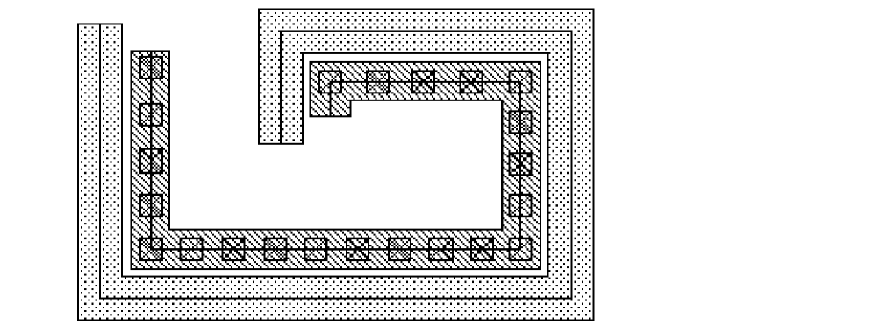

8
Creating and Editing Multipart Paths
This chapter shows you how to use the Virtuoso® Layout Suite layout editor to create a multipart path (MPP), how to edit and delete subparts, how to save an MPP as a template in your technology file or in an ASCII file so you can use it again, and how to load MPP templates from ASCII files. This chapter discusses the following topics:
- Creating Multipart Paths
- Flow for Creating Multipart Paths
- Creating an MPP Guard Ring
- Setting Multipart Path Environment Variables
- Selecting Multipart Paths
- Moving Multipart Paths
- Splitting Multipart Paths
- Reshaping a Multipart Path
- How Chopping Affects Multipart Paths
Creating Multipart Paths
You can use the Create Multipart Path command to create named paths that have relative object design (ROD) information associated with them. You can create simple one-part paths or complex paths containing several parts, such as a guard ring, transistor, bus, or shielded path. A path that consists of more than one part is called a multipart path.
A multipart path (MPP) consists of a single master path and one or more subparts. The master path is the defining object; all subparts are based upon and exist in relation to the master path. You can define any number of subparts for a multipart path. Subparts can be any or all of the following: offset sub-paths, enclosure sub-paths, and sets of sub-rectangles. Also, you can define connectivity for any or all parts of a multipart path.
A ROD multipart path has many advantages over a regular path; for example, you can access it by name, even through levels of hierarchy, and you can chop it.
You define a multipart path by filling in the fields of the Create Multipart Path form and the ROD Subpart form. After specifying information in the forms, you click in the current layout cellview window to define the points for the master path of the MPP. You can change the values in the forms while you are clicking points, until you double-click to complete the MPP.
When you define a new type of MPP, you might want to save the values in the forms as a template so that you can create other MPPs that are same or similar. A template is the set of values that specify a particular multipart path, such as a guard ring. You can define as many MPP templates as you wish. You save templates either to your technology library, if you have write permission, or to an ASCII file.
For a complete description of ROD objects and multipart paths, see the Virtuoso Relative Object Design User Guide.
With the Create Multipart Path command, you can:
- Create a single-part path using the form defaults.
- Choose an MPP template using the MPP Templates field.
- Modify the values in the Create Multipart Path and ROD Subpart forms to create a different MPP.
- Save the current form values as a template in your technology file (if you have write permission) or in an ASCII file.
- Load an ASCII MPP template file from your local hierarchy to add the templates to the list in the MPP Templates field. For additional ways to load ASCII MPP template files, see the leDefineMPPTemplate SKILL function in the Custom Layout SKILL Function Reference.
Create Multipart Path command does not support curved shapes.About Creating a Multipart Path in a Layout Window
In a layout cellview window, you create the master path for an MPP just as you create a regular path: by clicking to enter a series of points. You define the characteristics of the master path and of all its subparts by filling in the fields in the Create Multipart Path and ROD Subpart forms. As you draw an MPP in a cellview, you can make changes to the forms and see the results of your changes immediately, until you double-click to complete the MPP.
If you are creating a multipart path with abutted ends and the centerline of the master path intersects itself, the system will not create the path. A dialog box appears, saying that no path was created because it would have been self-intersecting. The system does not allow you to create a path whose master path centerline intersects itself, and does not allow you to create a path with one or more self-intersecting sub-paths.
When you first start the layout editor software, the Template Name and MPP Template fields in the Create Multipart Path form are set to New and the values of the other fields are system defaults, unless the mppTemplate environment variable is set. If mppTemplate is set, New is replaced with a specific template name, and the other fields are set to the template values.
For some fields, the system looks at your technology file for the design rule for the layer and, if it is defined, uses it as the default. For example, the system looks for the minWidth rule for the current layer to use as the default for the Width field.
You can create an MPP in a layout cellview window using the default values without even opening the form, or you can open the form and change the values. Or you can choose to use the values from an MPP template that was saved earlier. When you choose an MPP template from the MPP Template field, the system fills in the rest of the fields in the Create Multipart Path form and ROD Subpart form with the values specified in the template. The system assigns system default values to fields for which values are not specified in the template. You can use the template values as they are or modify them as desired.
If you want to designate a particular MPP template as your default rather than use the system default values, you can do so by setting the mppTemplate layout editor environment variable. For information about how to set this environment variable, see Setting Multipart Path Environment Variables.
About Saving a Multipart Path as a Template
You can save the values currently in the Create Multipart Path and ROD Subpart forms as a template with a unique name. This lets you create the same or similar MPPs. You can save MPP values as templates in the following two ways:
- To the temporary technology file in virtual memory If you have write permission, you can also save to your technology library on disk
- To an ASCII file in your local hierarchy
When you click the Save Template button on the Create Multipart Path form, the system displays the Save Multipart Path Templates form. This form lets you save any template named in the Template List field or save all templates named in the Template List field.
The remainder of this chapter describes how to define, change, and save MPP templates using the Create Multipart Path form. Instead of using a graphical user interface to define an MPP, you can create an ASCII file to define one or more MPP templates, using the leDefineMPPTemplate function. For information about this function, see leDefineMPPTemplate in the Custom Layout SKILL Functions Reference.
Flow for Creating Multipart Paths
The tasks involved in creating an MPP are shown in a suggested flow below. To see the steps for a task, click the task name.
Defining the Master Path
-
To open the Create Multipart Path form, in the layout window, choose Create – Multipart Path and press
F3.
The Create Multipart Path Form opens.
The first time you open form, the values of fields will default to the values set in the technology file and can vary depending on which layer is current in the Layers Panel. If there is no rule defined in the technology file, the system uses a system defaultWhen you select Create – Multipart Path, you might see warning messages about no minimum width rule defined for the first valid layer listed in the Layers assistant.You can use a template to create your MPP or create a new one from scratch. The templates already defined in your technology library are listed in the MPP Template field. You can also load MPP templates from ASCII files to add them to the templates listed in the MPP templates field and to the temporary technology file in virtual memory.Templates do not contain net names because each MPP you create from the same template could be on a different net. When you choose a template that contains pin connectivity, the system displays a message at the bottom of the cellview window prompting you to enter a valid net name. You must enter a name in the Net Name field for each part (master path and/or subparts) that has pin connectivity. If you click in the cellview window before entering the required net name(s), the system beeps. - To load templates from ASCII MPP template files, see Loading an ASCII Multipart Path Template File.
-
To create a new MPP in the current layout window (and a new MPP template), or to use an existing template, do one of the following:
-
To create a new MPP from scratch, without using an existing template,
-
When you do not want to save your MPP as a template, in the MPP Template field, click New.
Choosing New resets all values in the Create Multipart Path and ROD Subpart forms to the system defaults and sets the Template Name field to New. -
When you want to save your MPP as a template, for Template Name, type a unique name, such as
myMPP.
When you create a new MPP without using a template, you need to set the layer and purpose in the Layers assistant to the value you want for the master path. - Check the Layers assistant for the current layer and purpose for the master path, and modify it if desired.
-
When you do not want to save your MPP as a template, in the MPP Template field, click New.
-
To use an existing MPP template,
-
Select the name of the template you want from the MPP Template field.
When you choose an existing MPP template, the system changes the current layer and purpose in the Layers assistant to the layer and purpose defined in the MPP template for the master path.
If the layer specified in the template is not a valid layer, the system displays a dialog box asking if you want the system to add the master path layer to the Layers assistant. If you do not, the system uses the current layer in the Layers assistant. -
If a dialog box asks if you want to add the template layer to the list of valid layers, click OK or Cancel.
If you want a different layer, you can change the layer in the Layers assistant. - Check the Layers assistant for the current layer and purpose for the master path, and modify it if desired.
-
Select the name of the template you want from the MPP Template field.
Now you can modify the values in the Create Multipart Path form.
The ROD Name field specifies a unique name for the ROD object information about the MPP in the layout window. You can access information about the MPP through multiple levels of hierarchy using this name. The default ROD object name consists of the prefixpathfollowed by a number. -
To create a new MPP from scratch, without using an existing template,
- For ROD Name, accept the default system-assigned name or type in a name that is unique in the current cellview.
- For Technology Library select from the cyclic field the library in which you want to save the Multipart Path. This cyclic list contains a list of all the technology libraries in the effective technology libraries (those that are defined in the technologies data base) that contain only the multipart path templates defined in the data base.When a different technology library is selected in the Technology Library field the MPP Template field is updated to contain the templates contained in that library.
- For Choppable, do one of the following:
-
For Width, do one of the following:
- Type in a positive integer or floating-point number.
-
To use the
minWidthrule for the master path layer from the technology file, do not change the Width field. -
If the
minWidthrule is not defined in the technology file, and- This is the first time you have used this form in your current editing session and you do not specify a width, the system supplies a default and displays an warning saying that the default width is being used.
- You have used this form earlier in your current editing session, the previous value for this field is displayed and the system displays a warning.
-
For End Type, choose a value. If you want to specify a beginning or ending extension, you must choose variable.
The Offset and Justification fields are interdependent. Justification determines the part of the master path (master path centerline, left edge, or right edge) that is offset from the points you enter (the point list), relative to the direction of the master path. The direction of the master path is determined by the sequence in which you enter its points. -
For Justification, choose one of the following values:
-
When Offset is
0:
center to make the master path centerline coincident with the point list
left to make the right edge of the master path coincident with the point list
right to make the left edge of the master path coincident with the point list -
When Offset is not
0:
center to offset the centerline of the master path from the point list
left to offset the left edge of the master path from the point list
right to offset the right edge of the master path from the point list
-
When Offset is
-
For Offset, do one of the following:
-
To make the centerline of the master path coincident with the points you enter, leave Offset set to
0and Justification set to center. -
To offset the master path from the point list, type a signed integer or floating-point number.
The part of the master path that is offset from the point list is determined by the value of the Justification field. Whether you enter a positive or negative number depends on where you want the master path in relation to the point list. The following table lists various combinations of Offset with respect to the position of the master path.Direction of Point List Segment Positive Offset Negative Offset
For illustrations showing the location of a master path in relation to the point list, see “Examples of Offsetting the Master Path” in the Virtuoso Relative Object Design User Guide.
-
To make the centerline of the master path coincident with the points you enter, leave Offset set to
-
For Begin Extension, do one of the following:
-
If you want the master path layer to begin at the first point you enter for the master path, leave Begin Extension set to
0.
To specify an extension, the End Type field must be set to variable. - If you want the master path layer to extend beyond the first point you enter for the master path, type a positive integer or floating-point number.
-
If you want the master path layer to begin at the first point you enter for the master path, leave Begin Extension set to
-
For End Extension, do one of the following:
-
If you want the master path layer to end at the last point you enter for the master path, leave End Extension set to
0.
To specify an extension, the End Type field must be set to variable. - If you want the master path layer to extend beyond the last point you enter for the master path, type a positive integer or floating-point number.
-
If you want the master path layer to end at the last point you enter for the master path, leave End Extension set to
-
For Connectivity, do one of the following:
- If you do not want to define connectivity, leave Connectivity set to None and return to Flow for Creating Multipart Paths to continue with the next step in the flow.
- If you want to associate the master path with a net or specify it as a pin, continue to the next section, Defining Connectivity for the Master Path.
Defining Connectivity for the Master Path
You can associate the master path with a net, and you can designate the master path as a pin. Changes you make to the Create Multipart Path form immediately affect the master path in the layout window.
To define connectivity for a master path, do one of the following:
-
To assign the master path to a net, do the following:
-
For Connectivity, choose Net.
The form expands to show the net connectivity field. -
For Net Name, type the name of the net.
If you want to assign the master path to a pin, continue with the next step; otherwise, you have completed assigning the master path to a net. Return to Flow for Creating Multipart Paths to continue with the next step in the flow.
-
For Connectivity, choose Net.
-
To assign the master path to a pin, do the following:
-
For Connectivity, choose Pin.
The form expands to show the net and pin connectivity fields. -
For Net Name, type the name of the net.
When you choose Pin, you must enter a net name or the system beeps when you click in the cellview window to begin creating the MPP. - For I/O Type, choose one of the following: input, output, inputOutput, switch, or jumper.
- For Access Direction, choose the part(s) of the pin to which routing can be connected.
-
Turn on Display Terminal Name if you want to create a text-display object to display the net name for the pin.If pin names are not visible in the cellview, the Pin Names option in the Display Options form is not turned on. To display all pin names, turn on Pin Names in the Display Options form.The system uses the values of four fields to calculate the position of the text-display object: Reference Handle, Offset X, Offset Y, and the Justification field on the Pin Name Display form.
- Click the Display Terminal Name Option button if you want to set pin name display options, such as font, height, layer, and justification on the Pin Name Display form.
-
For Reference Handle, choose where you want to align the pin name in relation to the master path or subpart.
You can offset the pin name from the object in the direction of the X and/or Y axis. - For Offset X, type a positive or negative floating-point number to offset the origin point of the pin name along the X axis from the point specified by Reference Handle.
- For Offset Y, type a positive or negative floating-point number to offset the origin point of the pin name along the Y axis from the point specified by Reference Handle.
-
For Connectivity, choose Pin.
You have completed defining connectivity. Return to Flow for Creating Multipart Paths to continue with the next step in the flow.
Adding a New Subpart
You can add any number of subparts for the current master path in the layout window. If you want to use the subpart values again, you need to save them as a template along with the master path.
-
To specify a new subpart for the current master path, in the Create Multipart Path form, click the Subpart button.
The ROD Subpart Form appears. -
Click to choose the type of subpart you want to create: Offset Subpath, Enclosure Subpath, or Subrectangle.
The system displays the subpart fields at the bottom of the form. If any subparts of the type you selected already exist, the system displays one line of information for each subpart in the scroll window at the top of the form. -
To define a new subpart, go to one of the following topics:
Defining an Offset Subpath
Defining an Enclosure Subpath
Defining One or More Sets of Subrectangles
Defining an Offset Subpath
You can define a subpath coincident with an edge of the master path, on the left or right side of the master path, or overlapping the master path. This is called an offset subpath.
You can specify the width of the offset subpath or let it default to the minWidth rule for the subpath layer from the technology file. The location of an offset subpath in relation to the master path depends on the values of the Separation and Justification fields, in relation to the direction of the master path.
For a detailed description of offset sub-paths, see
Set values for the offset subpath section as follows:
- For Layer, choose the layer for the offset subpath.
- Turn on Choppable if the master path is set to choppable; otherwise set the offset subpath to choppable or not choppable, as you wish.
- For Begin Offset, type a signed integer or floating-point number to specify the starting edge of the subpath in relation to the starting edge of the master path. A positive number extends the end of the subpath beyond the end of the master path; a negative number retracts the end of the subpath from the end of the master path.
- For End Offset, type a signed integer or floating-point number to specify the ending edge of the subpath in relation to the ending edge of the master path. A positive number extends the end of the subpath beyond the end of the master path; a negative number retracts the end of the subpath from the end of the master path.
-
For Width, do one of the following:
- Type in a positive integer or floating-point number.
-
To use the
minWidthrule for the subpath layer from the technology file, do not change the Width field.
If theminWidthrule is not defined in the technology file, you must specify a width; otherwise, the width remains zero and no subpath is created. -
For Separation and Justification, type a signed integer or floating-point number for Separation and choose a setting for Justification, as shown in the table in section Rectangles in the Corners of Subrectangle Segments.
Whether you enter a positive or negative number depends on where you want to define the subpath in relation to the master path.
For illustrations showing the location of offset subpaths in relation to the master path, see “Examples of Offset Subpaths” in the Virtuoso Relative Object Design User Guide. -
For Connectivity, do one of the following:
- If you do not want to define connectivity, leave Connectivity set to None.
- If you want to associate the subpart with a net or specify it as a pin, go to Defining Connectivity for a Subpart.
-
To add the new offset subpath to the window at the top of the ROD Subpart form, click Add.
The system displays a line of data for the new offset subpath in the scroll window.
You must click OK or Apply at the top of the ROD Subpart form to make the new offset subpath part of the MPP. -
To save the new offset subpath as part of the MPP, in the ROD Subpart form, click OK or Apply.
So far, you are defining a new offset subpath only for the MPP in the current layout window. If you want to add the new offset subpath to an MPP template, you need to save your changes to the template. - To save your field values as an MPP template, go to Saving Multipart Path Values as a Template.
You have completed adding an offset subpath to your MPP. Continue to the next section or return to Flow for Creating Multipart Paths to continue with the next step in the flow.
Defining an Enclosure Subpath
You can define a subpath with its centerline on the centerline of the master path and its width calculated using the width of the master path plus a positive or negative enclosure value. This is called an enclosure subpath. The enclosure determines by how much the subpath is enclosed by the master path or by how much the master path is enclosed by the subpath.
For a detailed description of enclosure subpaths, see
Set values for the enclosure subpath section as follows:
- For Layer, choose the layer for the enclosure subpath.
- Turn on Choppable if the master path is set to choppable; otherwise, set the enclosure subpath to choppable or not choppable, as you wish.
- For Begin Offset, type a signed integer or floating-point number to start the edge of the subpath before or after the starting edge of the master path.
-
For End Offset, type a signed integer or floating-point number to end the edge of the subpath before or after the ending edge of the master path.
To calculate the width of an enclosure subpath, the system subtracts two times the enclosure value from the width of the master path:Width of Enclosure Subpath = Width of Master Path - (2 * Enclosure Value)
-
For Enclosure, type an integer or floating-point number for the enclosure of the subpath in relation to the master path.
- To define a subpath that is narrower than the master path, type a positive number.
- To define a subpath that is wider than the master path, type a negative number.
-
To use the
minExtensionDistancerule for the subpath layer from the technology file, keep the default.
IfminExtensionDistancefor the subpath layer is not defined in your technology file, and you do not type a value, the system sets the value to zero.
For illustrations showing the location of enclosure subpaths in relation to the master path, see “Examples of Enclosure Subpaths” in the Virtuoso Relative Object Design User Guide. -
For Connectivity, do one of the following:
- If you do not want to define connectivity, leave Connectivity set to None.
- If you want to associate the subpart with a net or specify it as a pin, go to Defining Connectivity for a Subpart.
-
To add the new enclosure subpath to the scroll window at the top of the ROD Subpart form, click Add.
The system displays a line of data for the new enclosure subpath in the scroll window.
You must click OK or Apply at the top of the ROD Subpart form to make the new enclosure subpath part of the MPP. -
To save the new enclosure subpath as part of the MPP in the cellview, click OK or Apply.
So far, you are defining a new enclosure subpath only for the MPP in the current layout window. If you want to add the new subpath to an MPP template, you need to save your changes to the template. - To save your addition to an MPP template, go to Saving Multipart Path Values as a Template.
You have completed adding an enclosure subpath to your MPP. Continue to the next section or return to Flow for Creating Multipart Paths to continue with the next step in the flow.
Defining One or More Sets of Subrectangles
You can define one or more sets of subrectangles in relation to the centerline of any master path. A set can contain one or more subrectangles.
You can specify the width and length of the subrectangles or let them default to the minWidth rule for the subrectangle layer from the technology file. You can offset the centerline of the subrectangles from the master path centerline, and you can offset the edge of the first and last subrectangles from the ends of the master path.
You can define connectivity for a set of subrectangles. When you specify that a set of subrectangles is a pin, each rectangle in the set becomes a pin. In the layout editor, the whole multipart path (master path and all subparts) is treated as a single object.
The location of a set of subrectangles in relation to the master path depends on the values of the Separation and Justification fields, in relation to the direction of the master path.
Rectangles in the Corners of Subrectangle Segments
When you create a subpart consisting of a set of subrectangles, the system creates a subrectangle in the corner formed by each segment of the subrectangle subpath, and then fills in the rest of the segment with subrectangles, following the spacing you specify.
There are several reasons that you might want to keep rectangles out of the corners of your subrectangle subpaths. For example, when you specify multiple subrectangle subpaths, placing rectangles in the corners of segments might cause individual subrectangles to be out of alignment vertically or horizontally with the subrectangles in the other subrectangle subpaths.
If you do not want rectangles in the corners of segments, you can keep them out by specifying the Begin Segment Offset and End Segment Offset options in the ROD Subpart form. The system measures the Segment Offset values from the edge of the master path, as shown below.
When setting values for the Segment Offset options, keep in mind:
- The Begin Segment Offset value does not apply to the first segment; the position of the first rectangle in the first segment is determined by the value of the Begin Offset option.
- The End Segment Offset value does not apply to the last segment; the position of the last rectangle in the last segment is determined by the value of the End Offset argument.
- The Segment Offset arguments work in combination with the Begin Offset and End Offset arguments.
- If the segment begins before the full distance specified by the Begin Segment Offset option, then the Begin Segment Offset is not applied, and a subrectangle could be placed at the corner of the subrectangle subpath.
- If the segment ends before the full distance specified by the End Segment Offset option, then the End Segment Offset is not applied, and a subrectangle could be placed at the corner of the subrectangle subpath.
- When applying the Offset options, the system will not create a spacing error. If the first rectangle in a subrectangle subpath segment would be too close to the last rectangle in the previous segment, the system discards the last rectangle in the previous segment.
When you specify the Offset options, you need to check the results to make sure the corners are as desired. If they are not, you should change the values of the Offset arguments and try again.
For a detailed description of subrectangles, see
Fill in the subrectangle section as follows:
- For Layer, choose the layer for the set of subrectangles.
- Turn on Choppable if the master path is set to choppable; otherwise, set the subrectangles to choppable or not choppable, as you wish.
- Turn on Diagonal if you want to create subrectangles on 45-degree path segments. This option works only when all subrectangles on the path are square.
- For Begin Offset, type a signed integer or floating-point number to start the first subrectangle before or after the starting edge of the master path.
-
For End Offset, type a signed integer or floating-point number to end the last subrectangle before or after the ending edge of the master path.
Before you set values for the Begin Segment Offset and End Segment Offset options, be sure to read the section, Rectangles in the Corners of Subrectangle Segments. -
If you want to keep subrectangles out of the corners of segments, assign positive numbers for the Begin and End Segment Offsets:
- For Begin Segment Offset, type a positive integer or floating-point number to begin the first subrectangle in each segment (except for the first segment), offset from the edge of the master path.
- For End Segment Offset, type a positive integer or floating-point number to end the last subrectangle in each segment (except for the last segment), offset from the edge of the master path.
For an MPP, the width of a subrectangle is parallel to the width of the master path.
The length of a subrectangle is parallel to the master path centerline.

-
For Width, do one of the following:
- Type in a positive integer or floating-point number.
-
To use the
minWidthrule for the subrectangle layer from the technology file, keep the default.
If theminWidthrule is not defined in the technology file, and the subrectangle length is specified, the system uses the length. If no length is specified, you must specify a width; otherwise, the width remains zero and no subrectangles are created. -
For Length, do one of the following:
- Type in a positive integer or floating-point number.
-
To let the length default to the
minWidthrule for the subrectangle layer from the technology file, do not change the Length field.
If theminWidthrule is not defined in the technology file, you must specify a length; otherwise, the length remains zero and no subrectangles are created.
For each segment, you control the space between rectangles and after the last rectangle with the two fields Gap and Space. Space determines the minimum distance between rectangles. Gap controls where the system places any space that remains after the rectangles are placed the minimum distance apart.
When the value of Gap is distribute, the system places subrectangles using the value of the Space option until there is no space for another subrectangle, then distributes the rest of the space as evenly as possible between the subrectangles in multiples of the grid space specified by themfgGridResolutionrule in the technology file. Any remaining space is placed after the last subrectangle in the segment.
When the value of Gap is minimum, the system places subrectangles using the value of the Space option until there is no space for another rectangle, then leaves any excess space after the last subrectangle in the segment. -
For Space, do one of the following:
- Type a positive integer or floating-point number for the distance between the edges of adjoining rectangles.
-
To use the
minSpacingrule for the subrectangle layer from the technology file, keep the default.
If you do not specify a value andminSpacingfor the subpath layer is not defined in your technology file, the system sets the value to zero. - For Gap, choose distribute or minimum.
-
For Separation and Justification, type a signed integer or floating-point number for Separation and choose a setting for Justification, as shown in the table below.
Whether you enter a positive or negative number depends on where you want to define the set of subrectangles in relation to the master path.
For illustrations showing the location of sets of subrectangles in relation to the master path, see “Examples of Sets of Subrectangles” in the Virtuoso Relative Object Design User Guide.
When you specify that a set of subrectangles is a pin, each rectangle in the set becomes a pin. In the layout editor, the whole multipart path (master path plus all subparts) is treated as a single object. -
For Connectivity, do one of the following:
- If you do not want to define connectivity, leave Connectivity set to None.
- If you want to associate the subpart with a net or specify it as a pin, go to Defining Connectivity for a Subpart.
-
To add the new subrectangle(s) to the scroll window at the top of the ROD Subpart form, click Add.
The system displays a line of data for the new set of subrectangles in the scroll window.
You must click OK or Apply at the top of the ROD Subpart form to make the new set of subrectangles part of the MPP. -
To save the new set of subrectangles as part of the MPP in the cellview, click OK or Apply.
So far, you are defining a set of subrectangles only for the MPP in the current layout window. If you want to add the new set of subrectangles to an MPP template, you need to save your changes to a template. - To save your addition in an MPP template, go to Saving Multipart Path Values as a Template.
You have completed adding a set of subrectangles to your MPP. Continue to the next section or return to Flow for Creating Multipart Paths to continue with the next step in the flow.
Defining Connectivity for a Subpart
You can define connectivity for any MPP subpart by associating it with a net. You can also designate a subpart as a pin. The changes you make do not affect the MPP in the layout window until you click OK or Apply in the ROD Subpart form.
To define connectivity for a subpart, do one of the following:
-
To assign the subpart to a net, do the following:
-
For Connectivity, choose Net.
The form expands to show the net connectivity fields. - For Net Name, type the name of the net.
- To apply the net assignment to the subpart of the MPP in the layout window, click OK or Apply.
You have completed assigning the subpart to a net. Return to Flow for Creating Multipart Paths to continue with the next step in the flow. -
For Connectivity, choose Net.
-
To assign the subpart to a pin, do the following:
-
For Connectivity, choose Pin.
The form expands to show both the net and pin connectivity fields. For Net Name, type the name of the net.
You must enter a net name for every subpart that has pin connectivity or the system beeps when you click in the cellview window to begin creating the MPP. - For I/O Type, choose one of the following: input, output, inputOutput, switch, or jumper.
- For Access Direction, choose the part(s) of the pin to which routing can be connected.
- Turn on Display Terminal Name if you want to create a text-display object to display the net name for the pin.
-
For Connectivity, choose Pin.
The system uses the values of four fields to calculate the position of the text-display object: Reference Handle, Offset X, Offset Y, and the Justification field on the Pin Name Display form.
- Turn on Display Terminal Name Option if you want to set pin name display options, such as font, height, layer, and justification on the Pin Name Display form.
-
For Reference Handle, choose where you want to align the pin name in relation to the master path or subpart.
You can offset the pin name from the object in the direction of the X and/or Y axis. - For Offset X, type a positive or negative floating-point number to offset the origin point of the pin name along the X axis from the point specified by Reference Handle.
-
For Offset Y, type a positive or negative floating-point number to offset the origin point of the pin name along the Y axis from the point specified by Reference Handle.
To make all the current values in the ROD Subpart form, including the connectivity values, part of the MPP in the layout window, you must click OK or Apply. - To save the subpart values as part of the MPP in the layout window, in the ROD Subpart form, click OK or Apply.
You have completed defining connectivity for the subpart. Return to the topics listed for Flow for Creating Multipart Paths to select another topic.
Editing a Subpart
The subparts of an MPP are listed at the top of the ROD Subpart form. You can change an existing subpart by changing the values for the selected subpart in the ROD Subpart form.
Remember, you must make all edits to subparts before entering the last point of your MPP in the layout window. You cannot change an MPP after clicking on its last point; instead, you must delete the whole MPP and recreate it. It is safest to save your form values as a template before drawing an MPP in your cellview. Then, if you need to edit a subpart, you can recreate the MPP from the template and use the ROD Subpart form to edit the subpart.
To edit a subpart, follow these steps.
-
In the Create Multipart Path form, click the Subpart button.
The ROD Subpart form appears.
Existing subparts are listed in the scroll window at the top of the form. -
Highlight the subpart you want to edit.
The system fills in the fields of the ROD Subpart form with the values of the subpart you selected. - Change the values in the ROD Subpart form as desired.
-
To make your changes affect the data listed for the subpart at the top of the ROD Subpart form, click Edit.
The system changes the highlighted subpart data to match the new form values. -
To make your subpart changes affect the MPP in the cellview, in the ROD Subpart form, click OK or Apply.
So far, your changes affect only the MPP in the current layout window. If you want your changes to affect an MPP template, you need to save your changes to the template. - To save your changes to an MPP template, go to Saving Multipart Path Values as a Template.
You have completed editing a subpart. Return to the list of topics for the Flow for Creating Multipart Paths to select another topic.
Deleting a Subpart
You can delete any subpart of an MPP. Subparts are listed at the top of the ROD Subpart form.
Remember, you must make all deletions to subparts before entering the last point of your MPP in the layout window. You cannot change an MPP after clicking on its last point; instead, you must delete the whole MPP and recreate it. It is safest to save your form values as a template before drawing an MPP in your cellview. Then, if you need to delete a subpart, you can recreate the MPP from the template and use the ROD Subpart form to delete the subpart.
To delete a subpart, follow these steps.
-
In the Create Multipart Path form, click the Subpart button.
The ROD Subpart form appears.
Existing subparts are listed in the scroll window at the top of the form. For a description of the data shown in the window, see one of the following: - Highlight the subpart you want to delete.
-
To delete the highlighted subpart from the data listed at the top of the ROD Subpart form, click Delete.
The highlighted subpart is deleted from the list of subparts in the ROD Subpart form. -
To delete the subpart from the MPP in the cellview, in the ROD Subpart form, click OK or Apply.
The highlighted subpart is deleted from the MPP in the current cellview.
So far, your changes affect only the MPP in the current layout window. If you want to remove the deleted subpart from an MPP template, you need to save the current form values to the MPP template, overwriting the old values. - To remove the deleted subpart from an MPP template, go to Saving Multipart Path Values as a Template.
You have completed deleting a subpart. Return to the list of topics for the Flow for Creating Multipart Paths to select another topic.
Creating a Multipart Path in a Cellview
After you specify values for the fields in the Create Multipart Path and ROD Subpart forms or choose an MPP template, you are ready to create an MPP in your layout window.
About Connectivity
MPP templates do not contain net names because each MPP you create from the same template could be on a different net.
When you choose an MPP template that has pin connectivity defined, the system displays a message at the bottom of the cellview window prompting you to enter a valid net name. If the MPP template does not have pin connectivity, and you want to associate the MPP with a net, type the net name in the Net Name field for the master path or for any subpart, as desired.
As you draw an MPP, you can change the values in the Create Multipart Path and ROD Subpart forms and see immediate changes to the MPP, until you double-click to enter the last point. After you enter the last point to complete an MPP, you can no longer change that MPP using the Create forms. You can, however, use the Edit MPP Path Properties form to change a completed MPP.
To draw an MPP in the layout window, follow these steps.
- Click to enter the first point.
- Move the pointer to the next point and click.
- Continue to move the pointer and click to enter points.
-
To enter the last point of the path, either double-click or press
Return.
You have completed drawing the MPP in your layout window. Return to the topics listed for the Creating and Editing Multipart Paths to select another topic.
Saving Multipart Path Values as a Template
Whenever you create a new type of MPP that you might want to use again, you can save the values currently in the Create Multipart Path and ROD Subpart forms as a template with a unique name. This lets you create the same or similar MPPs. You can save MPP templates in two ways:
- To an ASCII file in your local hierarchy
- To the temporary technology file in virtual memory If you have write permission, you can also save to your technology library on disk.
Saving Templates to an ASCII File
Remember that whenever you load MPP templates from ASCII files, they overwrite the templates in the technology file in virtual memory that have matching names. Later, when you save changes to your technology library on disk, the templates in virtual memory overwrite templates with matching names in the technology library on disk. If you do not want this to happen, see “
When you save to an ASCII file, you can enter a new file name or overwrite an existing file. The system does not append to an existing ASCII file.
To save to one or all templates to an ASCII file, follow these steps.
-
In the Create Multipart Path form, click the Save Template button.
The Save Multipart Path Templates form appears. - For Template List, choose the name of the MPP template you want to save or choose All Templates to save every template in the list.
-
Turn on ASCII File.
If you use the name of an existing ASCII file, it will be overwritten. -
Type the ASCII file name (or path and file name) or keep the default.
If you want to designate a particular value as the default for the ASCII File field, you can set themppASCIIFileNamelayout editor environment variable. For information about how to set this environment variable, see Setting the mppASCIIFileName Environment Variable. -
Click OK.
If the system overwrote an existing ASCII file, the following message appears in the CIW:Template
templateNameis replacing an exisitng template by the same name.
When you save an MPP to an ASCII file, the system also updates the temporary technology file in virtual memory.
Saving Templates to Your Technology Library
The Save Multipart Path Templates form allows you to save the template definitions to an ASCII file or directly to the technology library you select from the Technology Library cyclic field.
If you do not have write permission to the technology library, and you choose the Technology Library option, the field is grayed out and will not allow you to save the templates. Choose the ASCII File option instead.
To save to one or all templates to the temporary technology file in virtual memory, follow these steps.
-
In the Create Multipart Path form, click the Save Template button.
The Save Multipart Path Templates form appears. - For Template List, choose the name of the MPP template you want to save or choose All Templates to save every template in the list.
- Select the Technology Library radio button.
-
Click OK.
To make the template part of your binary technology library on disk, you must save your technology library changes before you exit the editing session.
Saving to Your Technology Library on Disk Now
If you have not saved the changes to your binary technology library during your editing session, the system displays a dialog box when you exit the software asking if you want to save the changes. You can save your template changes to disk then or you can save them to disk now.
To save the changes to your binary technology library to disk now, follow these steps.
-
In the CIW, choose Tools – Technology File Manager.
The Technology Tool Box appears. -
Click Save.
The Save Technology File form appears. -
Choose the name of the library you want to save and click OK.
The system displays a dialog box asking you to confirm that you want to save the specified technology library to disk. - In the Technology File Save form, click Yes.
You have completed saving the template (or all templates). Return to the topics listed for Creating and Editing Multipart Paths to select another topic.
Loading an ASCII Multipart Path Template File
You can access MPP templates that were saved in ASCII files by loading the ASCII files from the Create Multipart Path form. The templates in each file you load are added to the MPP templates in the technology file in virtual memory and added to the list of template names in the MPP Template field on the Create Multipart Path form.
To load an ASCII MPP template file,
-
In the Create Multipart Path form, click Load Template.
The Load Multipart Path Template form appears. -
In the Template File field, type the path and file name for the ASCII MPP Template file you want to load and click OK.
If you enter an invalid technology file name, the system displays a warning message in the CIW and no templates are loaded. Use the Browse button if you need assistance locating the template file name.
The system does not provide a default for the Template File field on the Load Multipart Path Template form. However, you can designate a file name or path and file name as the default for the Template File field on the Load Multipart Path Template form by setting the mppASCIIFilename layout editor environment variable. For information about how to set this environment variable, see Setting the mppASCIIFileName Environment Variable.
You have completed loading templates. Return to Defining the Master Path or to the topics listed for Creating and Editing Multipart Paths to select another topic.
Creating an MPP Guard Ring
The tasks involved in creating an MPP guard ring include:
The first two tasks are explained in detail in previous topics. To create an MPP guard ring,
-
Choose Create – MPP Guard Ring.
The Guard Ring Form appears. - Select the MPP template you want to use for guard ring creation in the Guard Ring Template cyclic field.
- Select the Technology Library in which the selected template is defined.
- Specify the connectivity information for the MPP guard ring in the Net Name field.
- Adjust the value in the Enclose by field to set the distance between the MPP guard ring and the selected object(s).
- Select Rectangular or Rectilinear shape for the MPP guard ring.
- In the layout window, select the object or objects around which the MPP guard ring will be created. A preview of the guard ring appears around the selected objects.
- Click Apply to place the MPP guard ring around the selected objects.
Setting Multipart Path Environment Variables
You can set two environment variables related to multipart paths:
Setting the mppTemplate Environment Variable
You can control the default values for the fields in the Create Multipart Path form the first time the form is opened during an editing session by setting the layout editor environment variable mppTemplate.
The system default for mppTemplate is New. When you open the Create Multipart Path form, the system sets the Template Name and MPP Template fields to New and the remaining fields to their system default values. Whenever you click New in the MPP Template field, the system resets all fields in the Create Multipart Path and ROD Subpart forms to the system defaults.
To preset the Template Name and MPP Template fields to the name of an MPP template you have already saved, set mppTemplate to the template name. Then when you open the Create Multipart Path form for the first time during an editing session, the system sets the Template Name and MPP Template fields to the name of your template and uses the template values as defaults for the remaining fields.
When you choose a different value for the MPP Template field in the Create Multipart Path form, the system automatically resets the values of all the fields in the Create Multipart Path and ROD Subpart forms and updates the mppTemplate environment variable to match the template name you chose. For example,
-
If the MPP Template field is set to New, which is the default, and you change it to
guardring, the system resets all form fields to the values defined for theguardringtemplate and updates themppTemplateenvironment variable toguardring. -
Conversely, if the value of the MPP Template field is set to
guardringand you change it to New, the system resets all fields to the system defaults and updates themppTemplateenvironment variable to New.
The following sections describe how to check the current value of mppTemplate and how to set it.
Checking the Value of mppTemplate
To determine the current value of the layout editor mppTemplate environment variable, follow these steps.
Changing the Value of mppTemplate
-
To change the setting of the
mppTemplateenvironment variable in the CIW or in your local~/.cdsenvfile, do one of the following:-
To change the
mppTemplateenvironment variable temporarily, type the following in the CIW:envSetVal("layout" "mppTemplate" 'string "
where your_value is the new value foryour_value")mppTemplate. -
To change the value of the
mppTemplateenvironment variable in your~/.cdsenvfile, edit the file, search formppTemplate, and change the value as desired.
The default layout environment variable setting formppTemplatein you~/.cdsenvfile looks like this:layout mppTemplate string "New"
-
To change the
Setting the mppASCIIFileName Environment Variable
You can set the layout editor environment variable mppASCIIFileName to control default values for the first time you open the following forms during an editing session:
- The ASCII File field in the Save Multipart Path Templates form
- The Template File field in the Load Multipart Path Template form
You can set this variable to a filename or to a path and filename. When you do not specify a path, the system uses your current directory.
The system lets you set mppASCIIFileName to a filename that does not exist yet. When you save a template to an ASCII file, the system creates the file. However, if you try to load before the file is created, the system displays a warning.
When the mppASCIIFileName environment variable is undefined or set to nil,
-
For the ASCII File field in the Save Multipart Path Templates form, the first time you open the form, the system supplies a default value that is based on your technology library name followed by
For example,.mpp.templates.il
You can change the ASCII File field by typing in it. If you do not type the .myTechLib.mpp.templates.ililsuffix, the system appends it. - For the Load Multipart Path Template form, the system does not supply a default value.
When you set the mppASCIIFileName environment variable to a specific filename or path and filename, the system supplies your value as the default for both the ASCII File field in the Save Multipart Path Templates form and the Template File field in the Load Multipart Path Template form.
When you change the value of the ASCII File field in the Save Multipart Path Templates form, the system automatically resets the value of the Template File field in the Load Multipart Path Template form to match and also updates the mppASCIIFileName environment variable to match. However, if you change the Template File field in the Load Multipart Path Template form, the system does not change the value of the ASCII File field in the Save Multipart Path Templates form and does not change the mppASCIIFileName environment variable.
The following sections describe how to check the current value of mppASCIIFileName and how to set it.
Checking the Value of mppASCIIFileName
To determine the current value of the layout editor mppASCIIFileName environment variable, follow these steps.
Changing the Value of mppASCIIFileName
-
To change the setting of the
mppASCIIFileNameenvironment variable in the CIW or in your local~/.cdsenvfile, do one of the following:-
To change the
mppASCIIFileNameenvironment variable temporarily, type the following in the CIW:envSetVal("layout" "
where your_value is the new value formppASCIIFileName" 'string "your_value.il")mppASCIIFileName. -
To change the value of the
mppASCIIFileNameenvironment variable in your~/.cdsenvfile, edit the file, search formppASCIIFileName, and change the value as desired.
The default layout environment variable setting formppASCIIFileNamein your~/.cdsenvfile looks like this:layout
mppASCIIFileNamestring "techLibName.mpp.templates.il"
-
To change the
Selecting Multipart Paths
A multipart path is a single object composed of multiple parts on the same or different layers. The parts are a single master path and one or more subparts. The master path is the primary part; subparts exist in relation to the master path. A subpart can be an offset subpath, an enclosure subpath, or a set of subrectangles. Individual subrectangles are not individual shapes but are part of a specific set of subrectangles.
The multipart path below has one subpath and one set of subrectangles. Both the subpath and the set of subrectangles are offset from the master path.

Selecting multipart paths is similar to selecting regular paths: you point and click or create a selection box in a similar manner. In general, you cannot select subparts separately from the master path; however, you can select the chopped end of subpaths to stretch them.
- In full selection mode, when you select any part of a multipart path, the whole multipart path is selected. The master path is highlighted on the current selection layer, while subparts are highlighted on a different layer. This lets you see which part is the master path and which parts are subparts.
- In partial selection mode (press F4), you can select an end, segment, or vertex of the master path.
- In partial selection mode, you can select the chopped end(s) of one or more subpath(s) and stretch them. When you stretch a chopped subpath, all other choppable subparts are stretched also.
Selecting a Whole Multipart Path
In full selection mode, selecting multipart paths is similar to selecting regular paths. When you select any part of a
To select a whole multipart path,
Selecting Multipart Path Ends
In partial selection mode, you can select an end of a master path in a
To select an end of a master path,
Selecting Chopped Subpath Ends in Multipart Paths
In partial selection mode, you can select the end(s) of one or more chopped subpaths in a
For example, to select the end of one chopped subpath,
Selecting Multipart Path Segments
In partial selection mode, you can select one or more segments of the master path in a
To select a single master path segment,
-
Do one of the following:
-
In partial selection mode, point to the middle of the centerline in a master path segment or subpath segment and click.
As you point, the nearest master path segment is highlighted with dotted lines. -
In partial selection mode, create a selection box around a master path or subpath segment. Make sure both end points of the segment centerline are inside the box.
-
In partial selection mode, point to the middle of the centerline in a master path segment or subpath segment and click.
To select more than one master path segment,
-
Do one of the following:
-
In partial selection mode, create a selection box around multiple master path or subpath segments. Make sure the end points of each segment centerline are inside the box.
-
In partial selection mode, point to the middle of the centerline in a master path or subpath segment and click. Press
Shiftand click to select additional segments.
As you point, the centerline of the nearest master path segment is highlighted with dotted lines.
-
In partial selection mode, create a selection box around multiple master path or subpath segments. Make sure the end points of each segment centerline are inside the box.
Selecting a Multipart Path Vertex
For
To select a vertex of the master path,
-
Do one of the following:
-
In partial selection mode, point to a vertex on the centerline of the master path or centerline of a subpath and click.
As you point, the nearest master path vertex is highlighted with dotted lines.If you are not able to click a centerline vertex, the current setting of the Gravity option is too restrictive. In the Layout Editor Options form, turn off Gravity. -
In partial selection mode, create a selection box around a vertex on the centerline of a master path or subpath.
-
In partial selection mode, point to a vertex on the centerline of the master path or centerline of a subpath and click.
For more information about multipart paths, see
Moving Multipart Paths
When you move a multipart path within a cellview, its master path and subparts move together. You cannot move the master path separately from its subparts, nor can you move subparts separately from the master path.
When you move a multipart path that has objects aligned to it, the objects move to stay in alignment with the multipart path.
-
Choose Edit – Move [
m]. -
In full selection mode, choose the multipart path by clicking on the master path or any subpart.
- Click to place the multipart path; the aligned objects follow.
The multipart path and all objects aligned to it appear in the new location.
How Moving Affects Multipart Paths with Aligned Objects
When you move a multipart path, any objects aligned to the multipart path move with it. To retain alignments when you move a multipart path to a new cellview, all objects aligned with the multipart path must be part of the selected set. If aligned objects are not selected, they will not be moved and the alignments will be broken.
In the example below, the multipart path path1 is the reference object. Via B in instance nTrans1 is aligned to path1, with a separation of -10 units in the direction of the X axis. Therefore, nTrans1 behaves as if it is aligned to path1. When you move path1, nTrans1 moves with it.
The system automatically recalculates the alignment of objects when you open a layout cellview in edit mode or edit an aligned object in any way.
For an overview of relative object design alignment, see
For multipart paths, see
Stretching Multipart Paths
You can stretch the ends, segments, and/or corners of a multipart path in the same way you stretch single-part paths; the master path and its subparts stretch together. You cannot stretch the master path separately from its subparts, nor can you stretch subparts (except chopped subpaths) separately from the master path.
If you attempt to stretch a subpart, the system applies the stretch to the whole multipart path. The only exception is that you can
To stretch one segment in a multipart path,
-
Choose Edit – Stretch [
s].
Stretch automatically changes to partial selection mode and prompts you to select the object you want to stretch. -
Select the segment you want to stretch by doing one of the following:
-
Click the middle of the centerline of the master path segment or on the comparable subpath segment.

-
Create a selection box around the centerline of a segment.
-
Click the middle of the centerline of the master path segment or on the comparable subpath segment.
-
If you are prompted for a reference point, click where you want the stretch to begin.
The reference point does not have to be directly on the multipart path.
Stretch prompts you to point to the new location. -
Point to a new location for the stretch.
As you point, an outline of the master path segment shows you the new location.

-
Click to select the new location for the selected multipart path segment.

Stretching Chopped Subpath Ends in Multipart Paths
You can select and stretch the ends of chopped subpaths in a multipart path. You might want to do this to reconnect the ends. When you stretch the chopped end(s) of one or more subpaths, all chopped subparts stretch with the selected subpath(s).
To stretch the chopped end of a subpath,
-
Choose Edit – Stretch [
s].
Stretch automatically changes to partial selection mode and prompts you to select the object you want to stretch. -
Select a chopped subpath end with a selection box or by clicking on it.
When you use a selection box, Stretch prompts you for a reference point.
-
If you are prompted for a reference point, click where you want the stretch to begin.
The reference point does not have to be directly on the path end.
Stretch prompts you to point to the new location. -
Point to a new location for the stretch.
As you point, an outline shows you the new location of the subpath end.

-
Click to select the new location for the chopped subpath end.
You can reconnect chopped subparts by stretching one subpath end over to the other subpath end. Even if you overlap the ends, the system regenerates the subrectangles correctly.
-
Select the same chopped subpath end, and point to select the new location so that it overlaps the other chopped subpath end.
As you point, an outline shows you the new location of the subpath end.
The system reconnects the subpaths and regenerates subrectangles to fill the reconnected segment.
Splitting Multipart Paths
You can add a jog to a section of a
Any objects aligned with or attached to the part of the multipart path that moves, move with the stretch. You can split paths only in full selection mode.
To stretch a section of a multipart path segment,
-
Choose Edit – Advanced – Split [
Control-s]. -
Select the object to be split by clicking anywhere on the multipart path.
Split prompts you to draw a split line by clicking on points. To define the section you want to stretch, your split line must cross the centerline of the master path in two places. -
To create a split line, click four points as shown below, then press
Returnto end the split line.
Split prompts you for a reference point.
-
Click a starting point for the stretch.
Split prompts you for the new location for the stretch.
-
Point to a new location for the stretch.
An outline of the segment shows you the position of the stretch. -
Click to select the new location for the section being stretched.

Reshaping a Multipart Path
You can reshape a segment of a
The master path and its subparts reshape together. You cannot reshape the master path separately from its subparts, nor can you reshape subparts separately from the master path.
To reshape one segment in a multipart path,
-
Choose Edit – Advanced – Reshape [
Shift-r].
The Reshape Form appears. -
Select a multipart path.
You are prompted to enter the first point. - Turn on Reshape Type: line.
-
Click the centerline of the master path to enter the first point.
As you move the pointer, an outline of the master path shows the new shape.
- Double-click when you are finished entering points.
- Click right to toggle between highlighting the new path and highlighting both the old and new path.
-
When the shape you want is highlighted, click.

For multipart paths, see
How Chopping Affects Multipart Paths
When you use Chop on a
- If you specify the master path as choppable, all of its subparts must be choppable also. When you specify the master path as not choppable, you can specify each of its subparts as choppable or not.
- If the master path is choppable, you can chop the whole multipart path into two or more separate multipart paths by chopping all the way through the master path at 90 degrees.
- If the master path is choppable and you chop at an angle other than 90 degrees and/or chop only part of the way through the master path, the chop changes all objects in the multipart path into ordinary paths, polygons, and rectangles. If this is not what you wanted, you can undo the chop with the Edit – Undo command.
- If the master path is not choppable, you can chop all subparts that are specified as choppable by chopping all the way through the master path at 90 degrees. All choppable subparts are chopped where you chop over the master path.
- When a chop affects sets of subrectangles that are choppable, the system regenerates subrectangles along orthogonal segments only.
- If the master path is not choppable, the system will not allow you to chop at an angle other than 90 degrees or to chop only part of the way through the multipart path.
After you chop a multipart path, you can select and stretch the chopped ends of subpaths. Although you cannot directly select, stretch, or chop a set of subrectangles, all choppable sets of subrectangles are also chopped when you chop a subpath.
When you chop a multipart path into one or more separate multipart paths, the system assigns the name of the original multipart path to the first new multipart path. The system assigns unique names to the other new multipart paths, starting with path0, path1, etc.
Chopping Multipart Paths with Aligned Objects
When you chop through the (choppable) master path of a multipart path, alignments to other objects are lost.
The following example shows what happens to an aligned object after cutting away a section of a choppable master path.

When you use the cutter to chop out part of the master path like this,

the result is two new, shorter multipart paths, neither of which are aligned to rect1.

The system keeps the name pathA with the first new multipart path and assigns a unique name in the format of pathn to the second new multipart path.
Chopping a Multipart Path
The multipart path shown below has one subpath and one set of subrectangles.
To cut away part of a multipart path,
-
Choose Edit – Basic – Chop [
Shift-c]. - Select the multipart path.
-
Create a chop rectangle around the master path to identify the parts you want to cut away.
To chop a multipart path or its choppable subparts, you must chop all the way through the master path. It is not necessary to chop through subparts.
The results of the chop depend on whether the master path is choppable or not, as shown below.
For multipart paths, see
Return to top